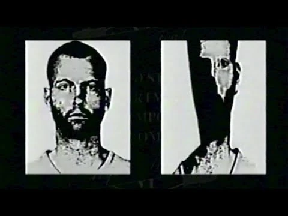
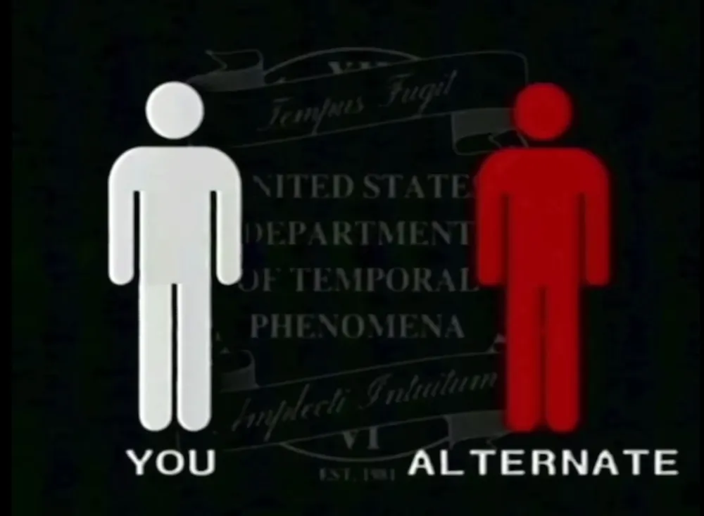
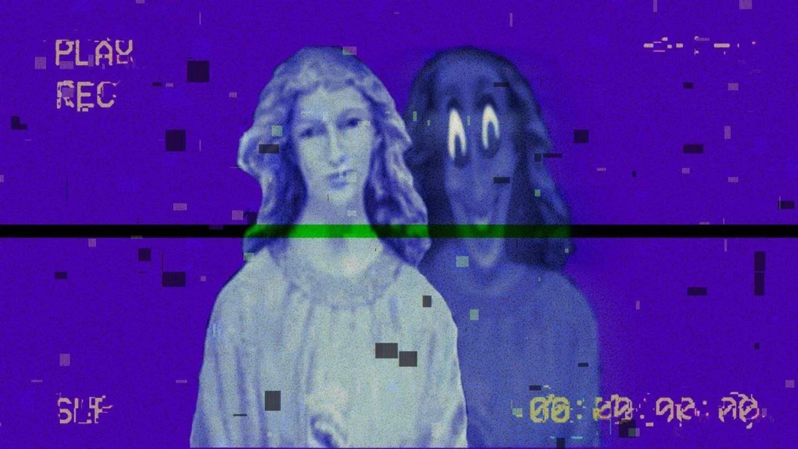
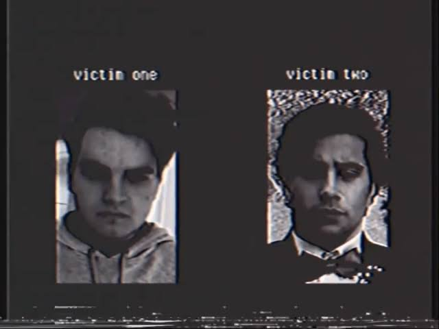
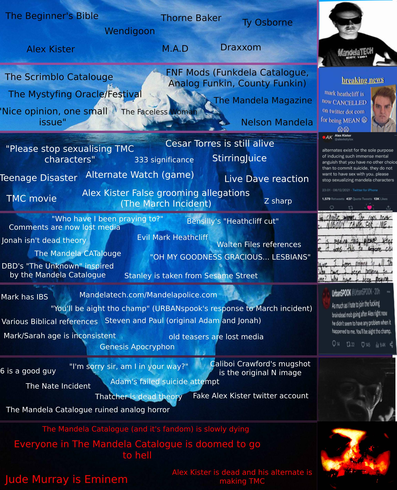

Volume 1
Documents the beginning of the outbreak in Mandela County during the 1990s. It features the Emergency Alert System (EAS) instructional tape warning citizens about the dangers of the Alternates and how the anomaly spreads.
VOL 1

Documents the beginning of the outbreak in Mandela County during the 1990s. It features the Emergency Alert System (EAS) instructional tape warning citizens about the dangers of the Alternates and how the anomaly spreads.
VOL 1

Hostile entities capable of replacing human beings. They are categorized into three main types:

A collection of recovered VHS tapes found throughout the county. They contain altered children's broadcasts, hijacked public access channels, and the infamous "Intruder" tape aired at midnight.

Records of individuals affected by M.A.D. (Metaphysical Awareness Disorder). Highlights documented cases, including the encounters of Mark Heathcliff and Cesar Torres.

Community insights exploring the distorted biblical origin of the story, the psychological manipulation through analog media, and the true motives of the entity known as Gabriel.
